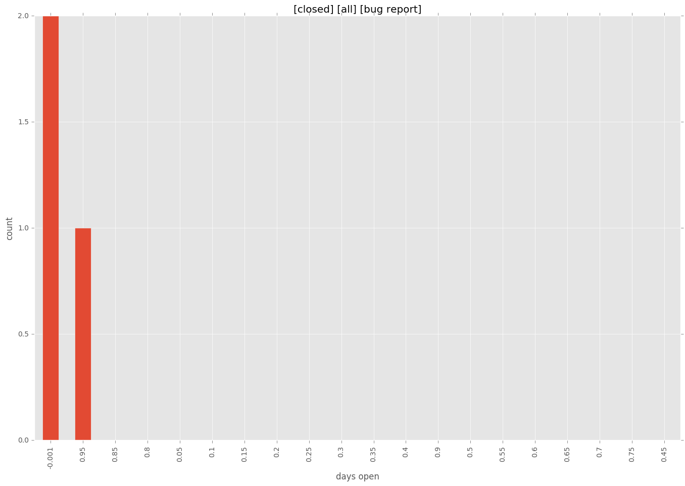
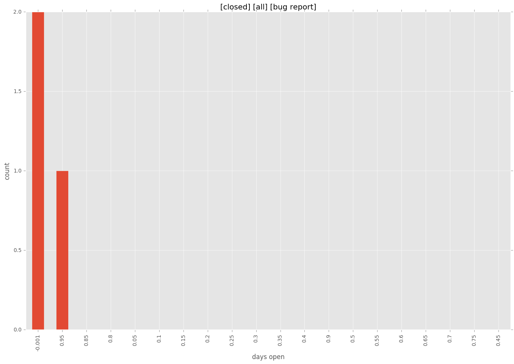

total issue counts
pullrequest: 1
issue: 3
new plugin: 1
bug report: 3
issue history
pullrequest history

days open by issue type
all
count: 5
std: 48.0187463393
min: 0
max: 88
median: 1.0
mean: 35.4
pullrequest
count: 0
std: nan
min: nan
max: nan
median: nan
mean: nan
issue
count: 0
std: nan
min: nan
max: nan
median: nan
mean: nan
new plugin
count: 2
std: 0.0
min: 88
max: 88
median: 88.0
mean: 88.0
bug report
count: 3
std: 0.57735026919
min: 0
max: 1
median: 0.0
mean: 0.333333333333
closures grouped by total days open
 
